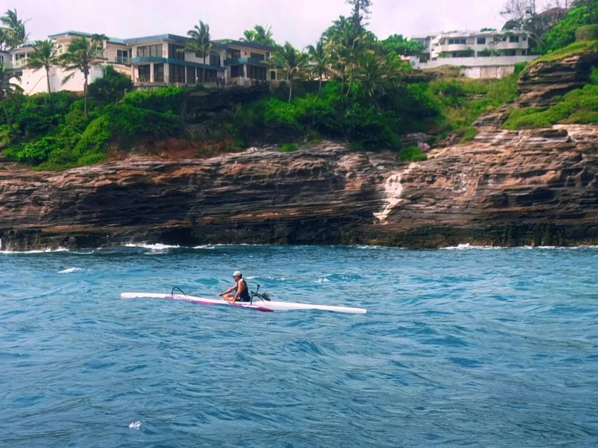
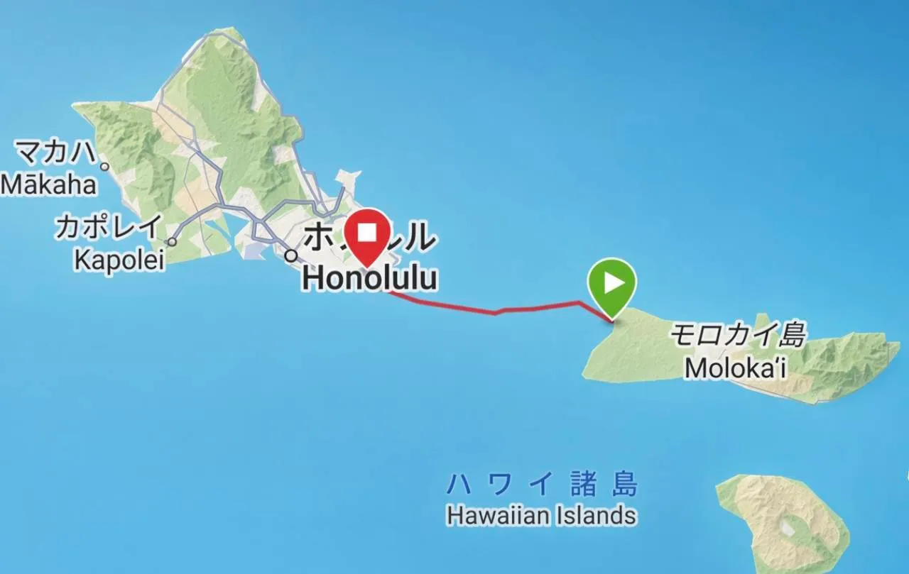
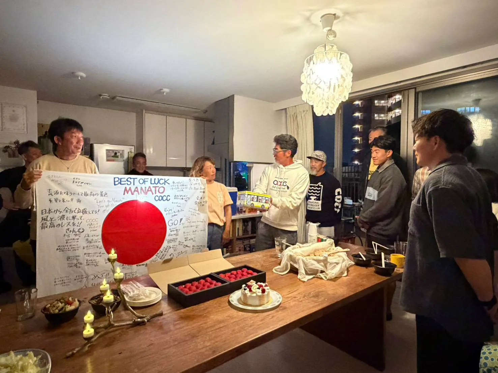
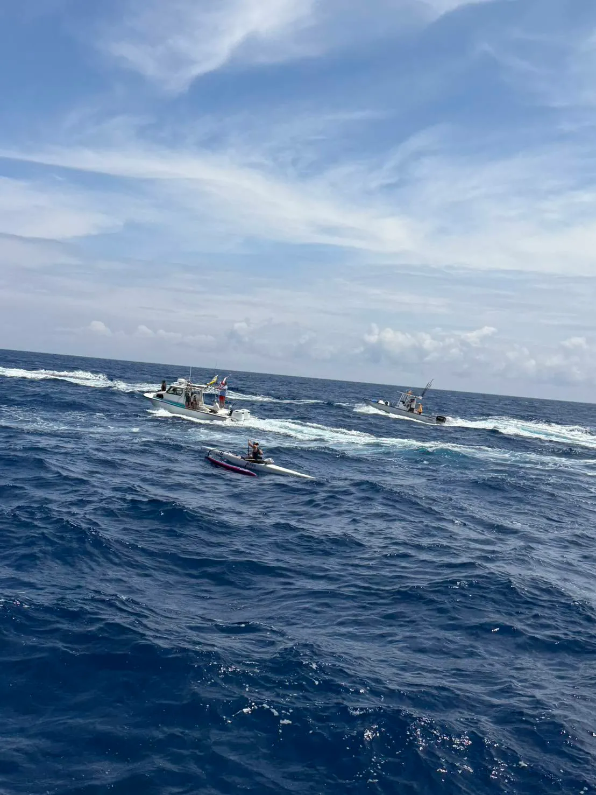
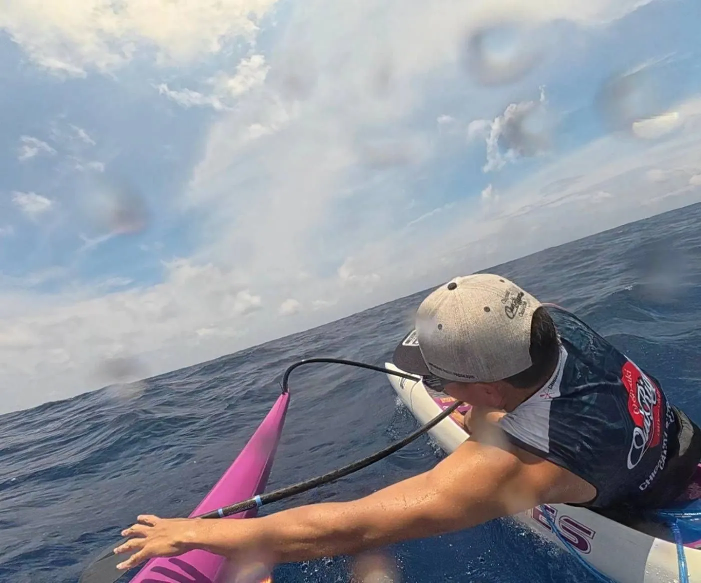
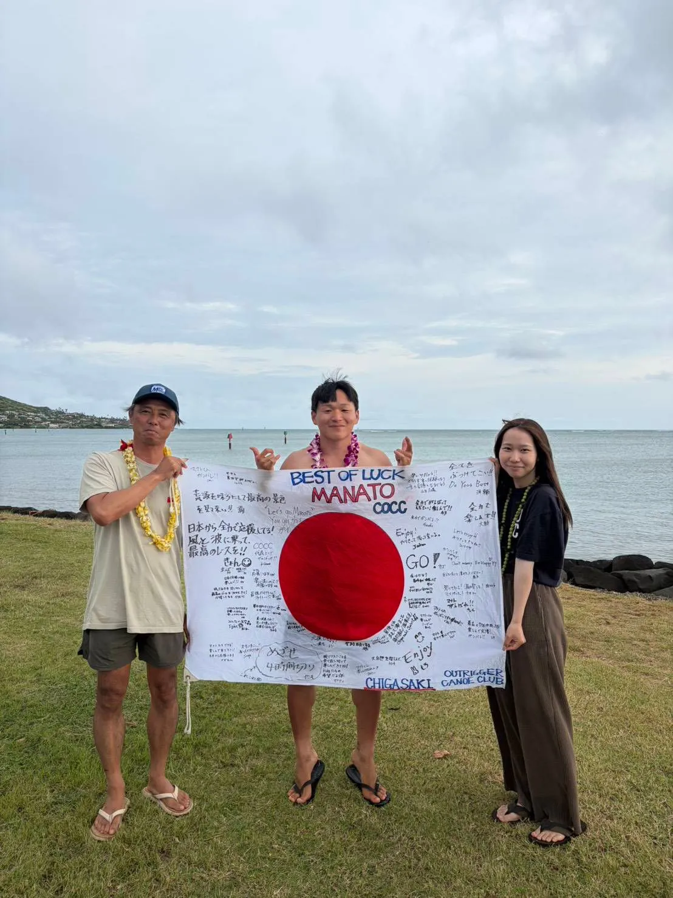
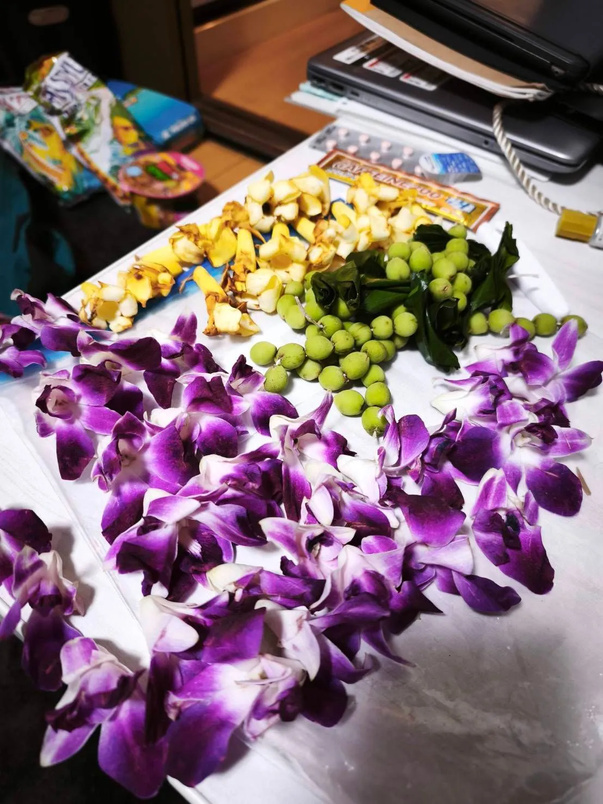
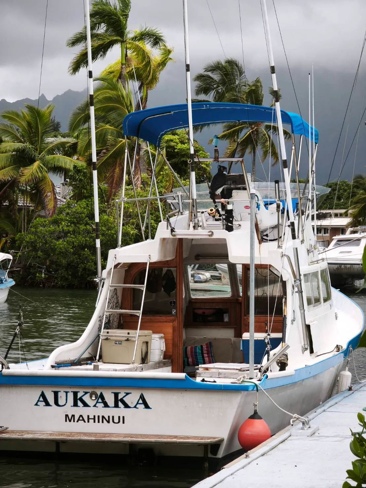
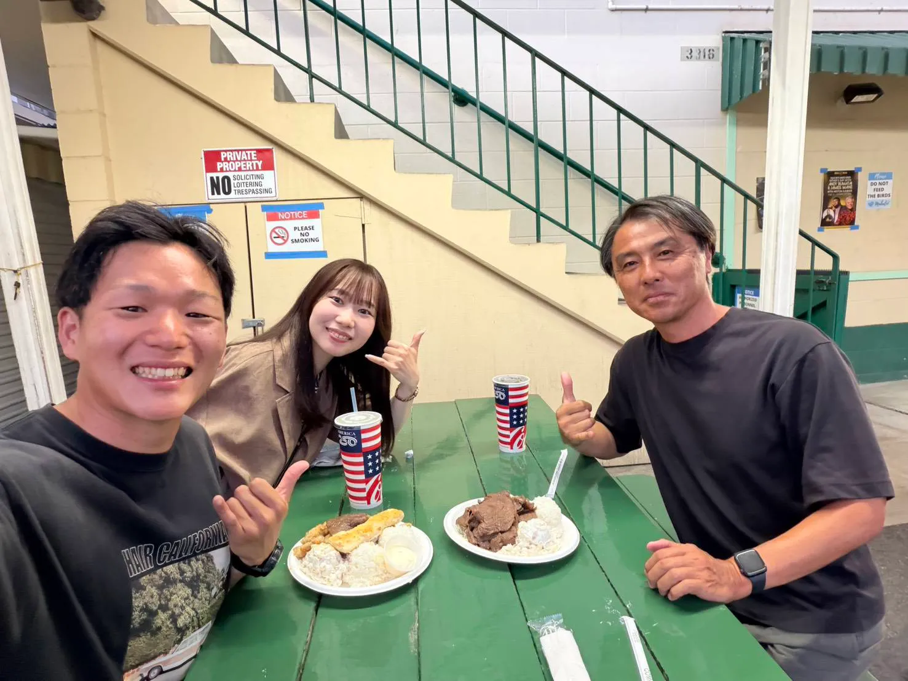
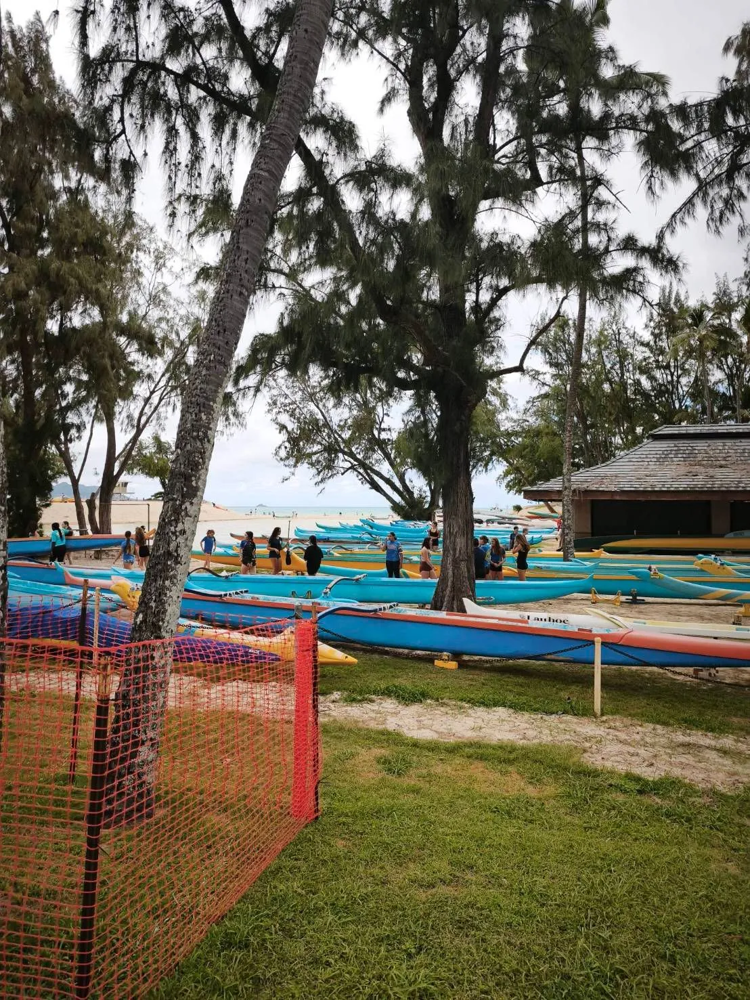

2026 Molokai Solo ~ Manato~
目次
初の海外レース挑戦 ~ Molokai Solo 2026~

約53kmの海峡を横断する、Kaiwi solo への挑戦。
Molokai solo とも呼ばれる。
私は今年の5月、人生で初めて海外の試合に出場しました。
まずは、結果です。
順位 : 119位 / 137人中
Time : 5時間23分49秒

順位は思い通りにいかず悲しい気持ちもありますが、今の自分の実力なので受け止めています。
しかし、今回のレースはただの競争ではなく、私にとって1つの大きな財産になりました。スポーツをやっていて、競争だけじゃない世界を感じられたのは、初めてです。
こんな最高な文化であるOutriggerは、宝物だと感じさせてくれる経験になりました。
試合のきっかけ
本格的にこのレースに挑戦しようと思い始めたのは、2025年の8月頃です。それまでは、「海外のレースってかっこいいな。自分もいつかは出てみたいな。でもお金ないしな。」と遠い存在のように思っていました。
そんな風に思いながら口ずさんでいたところ、カヌークラブの大先輩からこんな一言をもらいます。
「行きたかったら、出ればいいじゃん。」
久場さんです。
まさか、そんな言葉をもらうなんて思ってもいなく、自分の行動力の無さに気づかされた衝撃的な1言でした。
試合までの生活とメンタル
そこから貯金ほぼ0の私は、こんな生活を送ります。
5:00 起床
6:00-7:30 練習
8:00-9:00 会社へ移動
9:00-18:00 仕事
19:00-24:00 バイト
24:00-25:00 海へ移動
100万円は必要というのを聞いていたので、1人暮らしの私はひたすらバイトをしました。
練習がメインのはずなのに、気づけばお金を稼ぐことがメインになっていたような。
そして、海外レースが近づくにつれ、国内のレースでも思うような結果が出ず、段々追い込まれていくような感覚になっていた気がします。
ただ、出ると決めた以上は出る。その一心で過ごしていました。
クラブの皆さんのおかげで辿りついた海外レース
そんな生活を送りながら、海外レースに出るにあたってクラブの皆さんには感謝しても返しきれないほどの応援をいただきました。
海から遠い私を、クラブにほぼ毎日泊めさせてくださった代表Masaさん。
満さんを始めとして、クラブから”マナトが出るから！”という呼びかけで集まった応援金。
試合当日には、”サポーターが絶対必要だから！”と手配してくださったT21さん。
毎週、Down Windする為に車を出してくださった、きょんさん、ジョンさん、ちはる。
そして試合前の壮行会。そこではAriさん宅の絶景が広がる会場で、Gさんのプロの手料理を振舞っていただき...皆さんからも沢山の物をいただきました。
「茅ヶ崎アウトリガーカヌークラブは、やっぱり最高だ！！」と涙してしまいました。
温かい場所があって、温かい仲間がいて、皆さんの応援が、私の忙しい生活の中では最高の居場所となりました。
そして、クラブの皆さんにHawaiiへ送り出してもらいます。

レース本番
待ちに待った
5/9(土)AM9:30、レース開始前。
世界のTOPパドラーがうじゃうじゃと集まり、Molokai島のKupuhi beachがいっぱいになります。
持ち物は、補給と瑛美からもらった「Good Luck」と書かれたガムテープ。そしてTakuさんからいただいたお守り。エスコートにはCOCCからもらった国旗。すべての準備を整え、気合も十分。
そして、oc1を持ち、海に向かったところ、波が少しある！セットで頭？パワーも強い！ブレイクした波が分厚いし、ダンパー気味！でも、茅ヶ崎で鍛えられた私は完璧なタイミングで出艇しました。まず驚いたのが、自分がここだ！と思ったタイミングが、横一列10人近く全員ここだ！と出艇したこと。失敗する人が誰1人いないこと。女性がガンガン波に向かっていくこと。レベルの高さを感じました。
そして今回、エスコートしてくれるBobと徳田さん、そして瑛美に荷物を預け、頑張って来いよと送りだしてくれることになります！
今回のプランは、レース終盤の北からの風が強くなることを考慮して、スタートして波に乗れない角度で1時間30分は北側に向かうことでした。後半疲れるであろう30km〜45kmで波と風を使う予定。
5/9(土)AM10:30
◆レーススタート！
2025年ChampionのKevin.C.Jのパドルスピードは短距離走？と思うほどのスタート。そしてスタートでガンガン離れていく先頭集団。それに引っ張られて全体のスピードも上がり、スタートしてすぐ隣に見えたのは細身の筋肉質女性。「なんだここは。」と思いながら、「後半が弱いんだから落ち着け。」と安心させて漕ぎ進めます。
しかし、心拍数はスタートで180を余裕に超え、大きく深呼吸をしながら、これはまずい。と心の中で焦りを持ちながら、「いや、大丈夫。」と言い聞かせていました。
◆5km地点。
5km地点でエスコートと合流でき、思ったより早い！と。
風は予報ではまだ吹かない地点だったが、この時点で風速4m弱。北からの風がさわさわ。まだ弱いのに、なぜか乗れるうねりが連なってる！日本と違う！
そして、エスコートボートから、北に行きすぎ！という指示を受け、南に艇をふり、波を使いながら、Oahu島へ向かうことになります。
◆5km〜25km。
ここが唯一私が楽しめたZone。ずっと波に乗ってまっすぐOahu島へのDown。艇速も11km/hが楽に出せ、average12km/hをKeepするスピードで楽しめました。瞬間15km/hが何十回も出せる楽しさ。右からの風がある中、後ろからのうねりを感じ、この場所特有のうねりなんだなと思いながら。日本では基本風の向きに合わせてうねりができ、まっすぐ乗るDownだが、Molokaiは広い海なのに、風とうねりが一致していない。両方選んで乗れる。難しい！
後ろからのうねりと右からのうねりを楽しむままに選んでいた。このとき、これがOahu島まで続けば問題ないかも。とも思っていた。

◆30km地点。
しまった。南に行きすぎた！と心の中で思いつつ、そこからどう巻き返そうかを考え始める。風が右からが想像以上に強いからだ。Oahu島の位置を見ると、完全にうねりと航路が外れてしまっている。そして、後ろからあったうねりは、まだ残っていたが、右からの風、うねりが強くなりすぎて、船を安定させることにも気を使わなければならない。

同じ航路には50代?60代?の先輩Paddlerが1人見えた。まだ仲間がいる。大丈夫。と思いつつ、ここから少し体に疲れが見え始める。
心拍が140前後に落ち始め、体が冷え始めている。
徳田さんに急遽ペットボトルで飲み物を作ってもらい、一気に摂取し漕ぎ進める。
◆40km地点。
思ったよりOahu島が遠い。レースの距離は50kmと言われていたので、残り2割と思うと、あと少しな気分でいた。が、実際残り10kmは、目の前にするとまだまだ果てしなく感じる。
そして体の疲れはピークに達して、ピッチも上がらない。これ以上ピッチを上げると、体が攣る。心拍も130前後まで落ち、曇り空のOahu島は寒く体も少し冷えている。完全に体力不足。ただ普段ならここで体が攣るけど、「まだ攣っていない！これもさっき摂取した効果だ！良かった！」とも思う。
もうここは完漕することしか頭に入っていない。体も冷え、艇速も8km/hしか出ない。体の疲労のピーク、そしてまだ遠いことが余計にメンタルを削る。最後を考えて最初うねりを使わなければとも思ってしまった。完全にネガティブ思考。「きつすぎる！」と思いながら、なんとか体を動かす。
◆50km地点。
Oahu島のChina Walls手前まで来て、ようやくあと少し。というところ。
右側には島があり、右からの風のストレスはなくなった。ただ、島への波の跳ね返りで海はざわついている。自分に力が残っていたら、この跳ね返りも選んで乗れるんだろうなと思う。
そして、51km地点。ゴール地点が見えたと同時に急に視界が広がり、突然向かい風になる。もう艇速は7km/hしか出ない。疲れている。後ろから乗れる波が来てるが乗りたくない。きっと乗ったら体重移動とパドルでカヌーを支えることで、今までと違うところに力が入り、体が攣ってしまうからだ。
◆53.18km ゴール。
ゴールしたとき、もう笑顔が出ないくらい体も冷え、満身創痍だった。ただ、あのときこんなに時間がかかったのにゴール地点では何人もの人が迎えてくれた。
先頭集団がついてから1時間30分以上たっているのに、「お疲れ！」と言わんばかりの、現地の人からの温かい声。「カヌー運んであげるよ。」と関係者が颯爽とカヌーを運ぶ。
船を降りると、Hawaiiのレイをかけてくれたり、色んな人が声をかけてくれたり、Hawaii唯一の友達マッコアが待ってくれてたり。もっと心から笑顔で終わりたかったが、疲れすぎて笑えなかった。でも心が温かくなり、少しだけ涙が出そうになった。
「終わったんだな。」と、しみじみと感じました。


レースについて思うこと
試合が終わったあとは、とても暗い気持ちになってしまった。順位はともかく、今回のレースで自分の実力と練習不足を思い知らされたからだ。違うコースだったら、と思っていたが、今思うと自分のコースでも速い人は速い。そして体が冷え切って漕ぐような選手はきっといない。まだまだ、自分が海と一体になって、楽しめていないんだろうな、と心底思う。きっとこれは、この海峡でこのレースだからこそ、見つけることができる自分の弱い部分。
そんな見つめなおすところが多いレースだったが、こんなに自分を見つめなおすことができるって、幸せだなと思う。もっときつい環境で頑張りたい。
もう1つ、夢ができた。この海峡を仲間達と過ごせたら、もっと幸せなんだろうな。と。
チームで挑むMolokai Hoe。死ぬまでに1回は出たい。
反省
今までの記事を見ればわかる通り、ネガティブな内容が多すぎる！でも、それくらい自分を見つめなおす良いレースになった。
また1から積み上げようと思う。自分がどこまでいけるPaddlerなのか、少しでも挑戦していたい。
あとは感謝の気持ちをもっと皆に伝えたかった。
まささんが壮行会で言ってくれた言葉を今でも覚えている。「マナトはそういうの上手くないからな。」と。見抜かれていました。
サポートをしてくれた、Bob、徳田さん、瑛美。そして、クラブの皆さん。他クラブなのに協力をしてくださったおがっちさん、ケニーさん、Hawaiiの仲間達！
本当にありがとうございます。今回の経験は、自分の宝物になりました。
少しでも持ち帰り、クラブの皆さんに貢献したいと思います。
寝坊する未熟者の私を厳しく叱ってください。海の近くに引っ越すので、もうしません。


最高なプレート飯
(思い出の場所)

Hawaiiのカヌー文化
2028年のMolokai Soloでリベンジします。